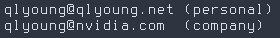

Member of Technical Staff, Cumulus Networks.
Alumnus, North Carolina State University, 2017 B.S. Applied Mathematics, minor in Computer Science.
President, NCSU Linux User's Group.
Skills in software development, networking, system administration and security.
[

]
{
'pgp-key' : '0C801DE9.asc',
'fingerprint' : 'FA1B FC6F 8EDF AED4 D629 C6A6 CF70 0357 0C80 1DE9'
'keyserv' : 'pgp.mit.edu'
}